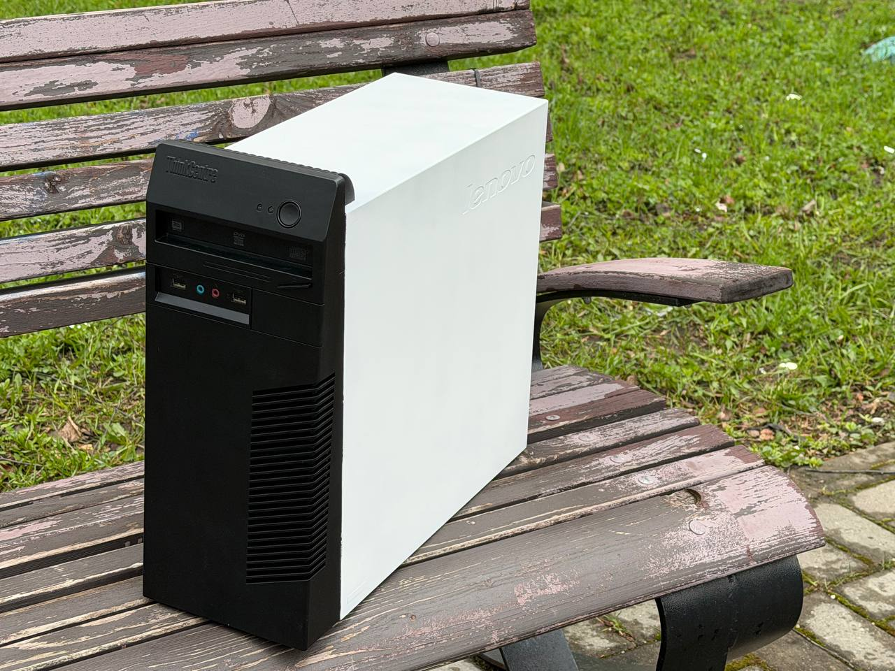
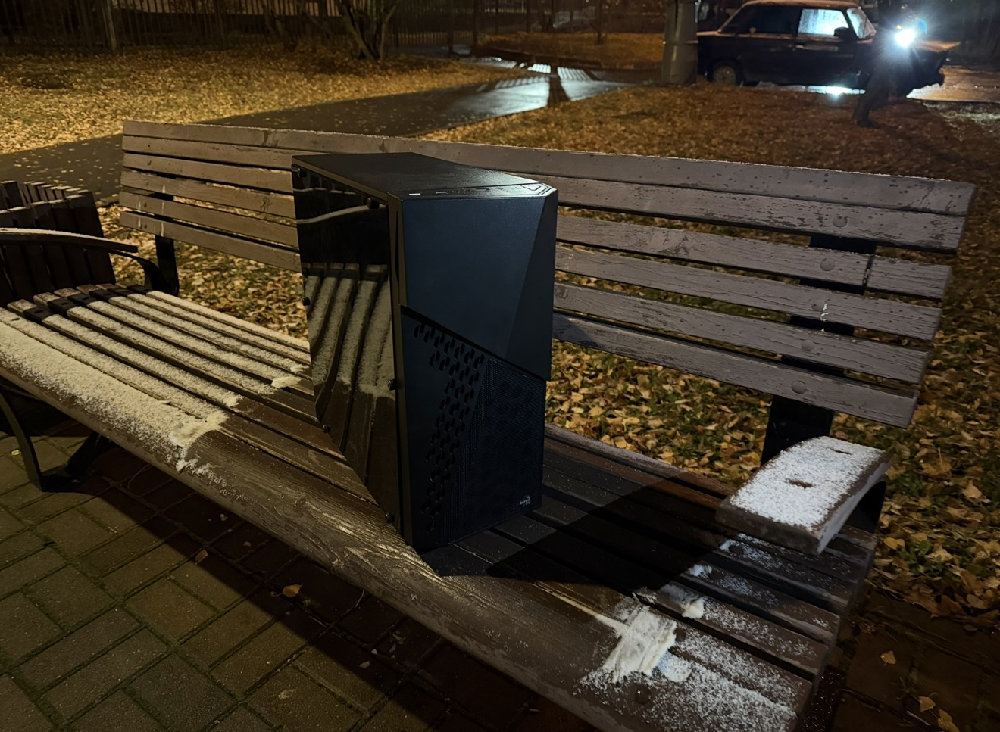

Сборка под ключ
Подбираем компоненты под задачи и бюджет, собираем аккуратно, тестируем и отдаём готовым к работе.
Собираем ПК, которые не стыдно показать. Апгрейдим то, что ещё живо. Настраиваем так, чтобы работало — а не «вроде должно». Техномор — по расписанию и без повода.
Четыре направления — один подход: без визуального мусора и лишних компромиссов.
Подбираем компоненты под задачи и бюджет, собираем аккуратно, тестируем и отдаём готовым к работе.
Меняем то, что устарело, — не трогая то, что ещё работает на отлично. Обосновано, по делу, без переплат.
Термопаста, продувка, нормальные температуры и тишина. ПК живёт дольше — вы слышите его реже.
Разбираем ваш кейс: что брать, где сэкономить, а где — категорически нет. Честно и по делу.
Коллекция только начинается — пока в ней две сборки. Каждая — с характером и без компромиссов.

Аккуратный кабель-менеджмент, тихое охлаждение, стабильные температуры. Начало коллекции.

Продолжение коллекции: продуманный подбор компонентов и внимание к деталям.
Пишите в Telegram — там быстрее всего. Или звоните, если удобнее голосом. Отвечаем по делу, без «здравствуйте, расскажите о себе».